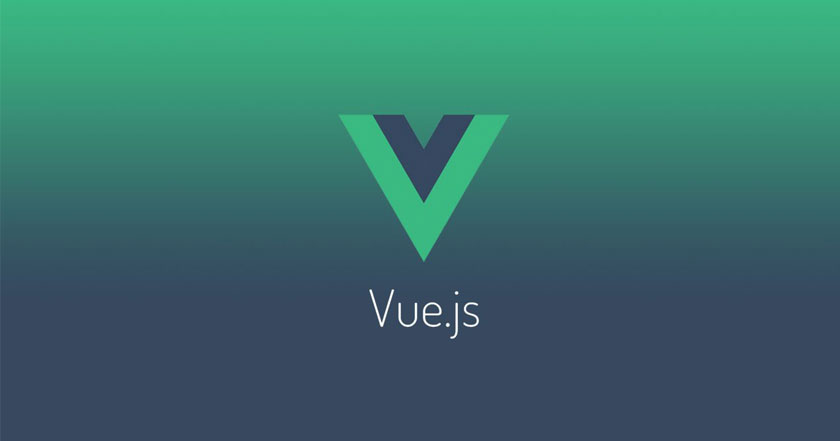

<section>
    <div id="article-list" v-if="articles && articles.length >= 1">
        <article class="article-item" v-for="article in articles" :key="article._id">
            <div class="image-wrap">
                
                
            </div>
            <h2>
                <router-link :to="{ name: 'article', params: {id: article._id} }">{{ article.title }}</router-link>
            </h2>
            <span class="date">{{ article.date | moment("from") }}</span>
            <router-link :to="{ name: 'article', params: {id: article._id} }">Leer más</router-link>

            <div class="clearfix"></div>
        </article>
    </div>
    <div v-else-if="articles && articles.length <= 0">No hay articulos para mostrar</div>
    <div v-else>
        <i class="fas fa-3x fa-sync fa-spin"></i>
    </div>
</section>